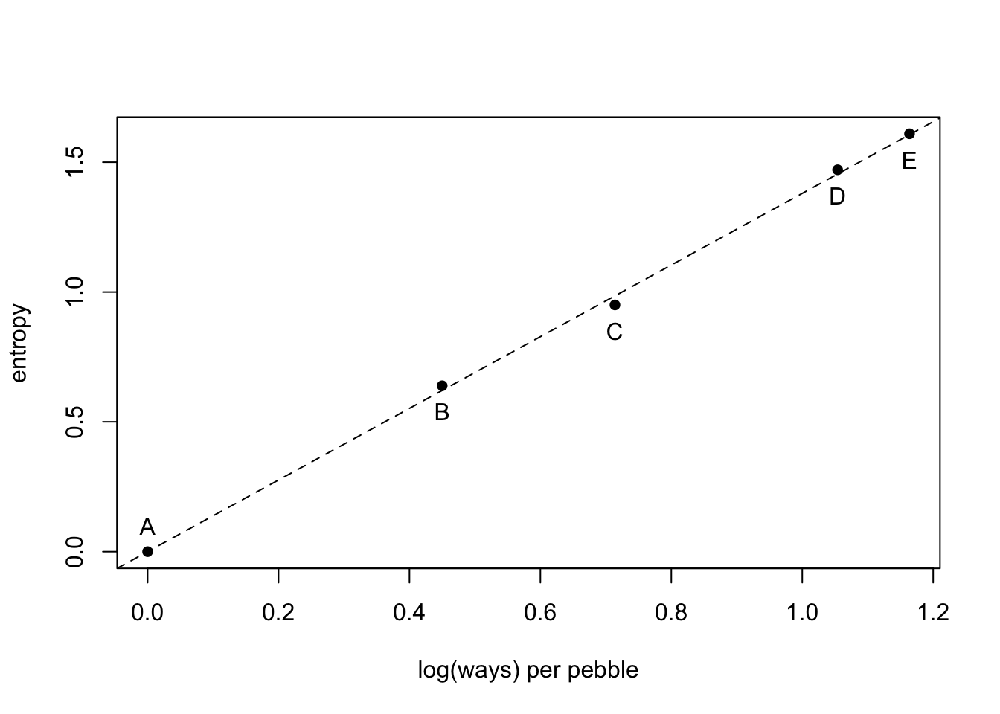
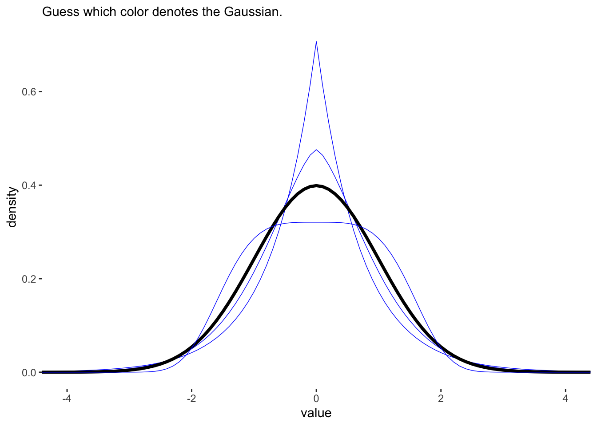
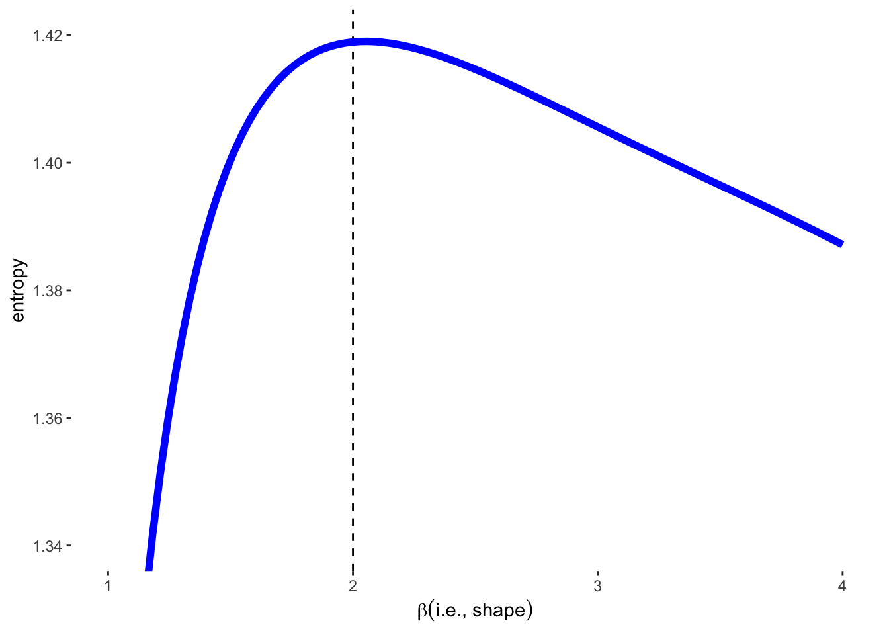
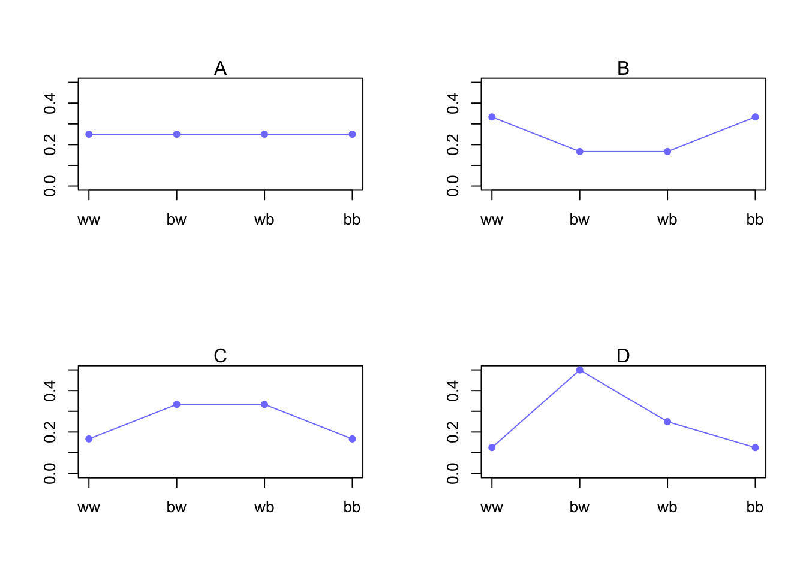
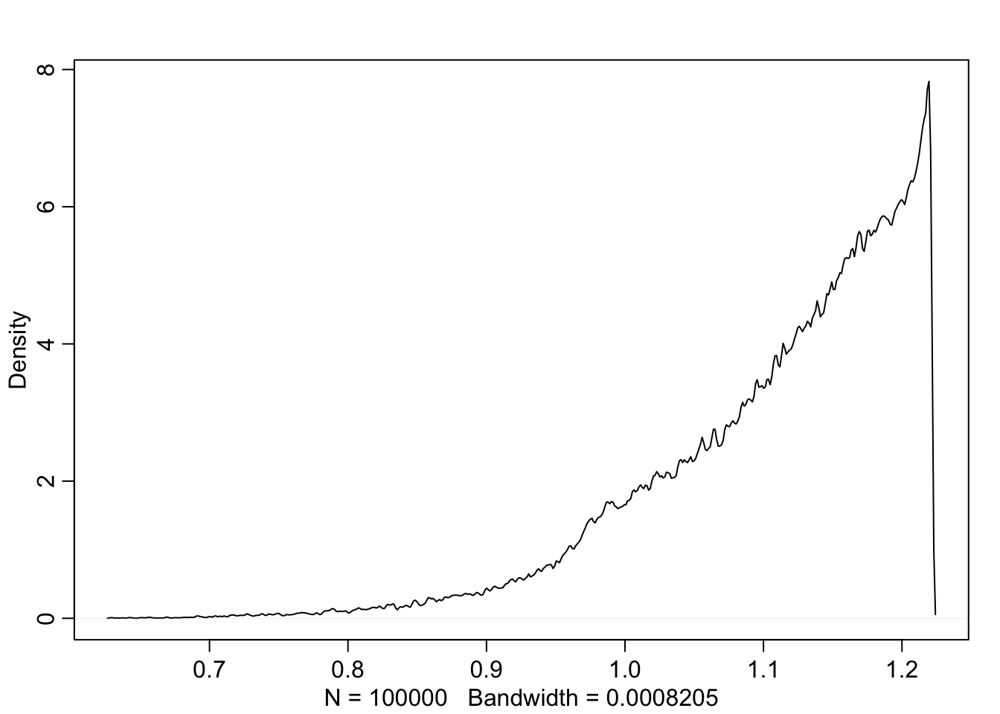
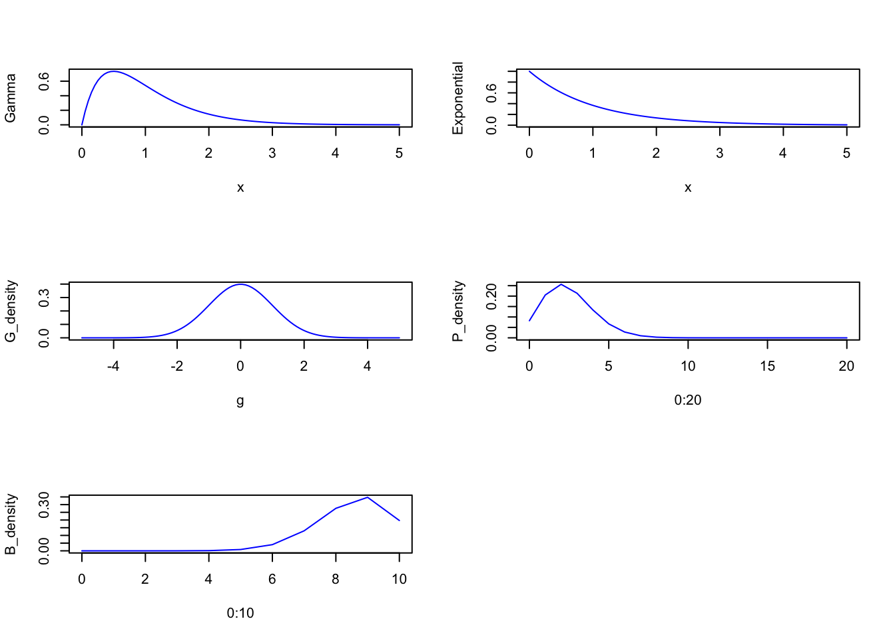
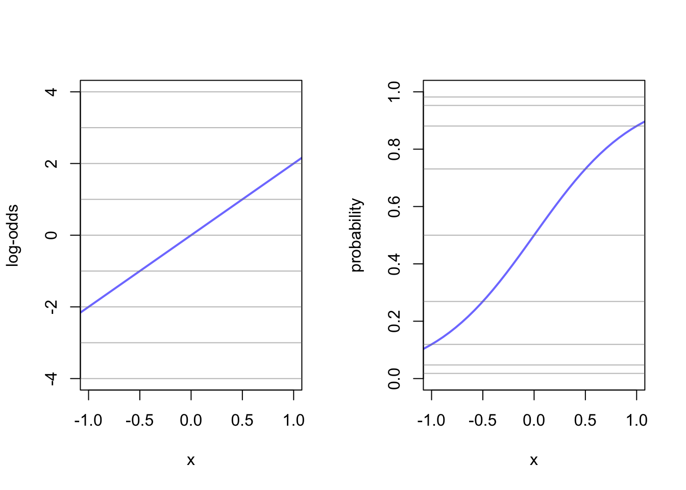
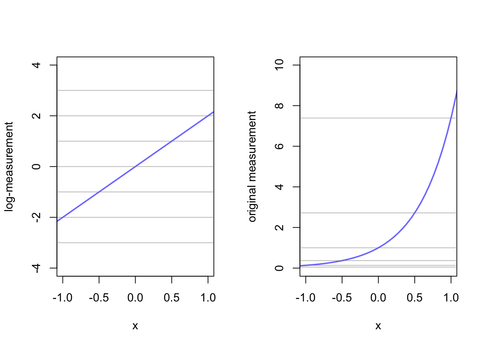

Chapter 10 Big entropy and the generalized linear model
10.1 Maximum entropy
Recall the information theory function from Chapter 7
\[H(p) = - \sum_{i}p_{i}\text{log}p_{i}\]
This is also known as information entropy
Maximum entropy: >> The distribution that can happen the most ways is also the distribution with the biggest information entropy. The distribution with the biggest entropy is the most conservative distribution that obeys its constraints. (p. 301)
5 buckets and 10 pebbles. The 10 pebbles can go into any bucket with the same probability.
p <- list()
p$A <- c(0,0,10,0,0)
p$B <- c(0,1,8,1,0)
p$C <- c(0,2,6,2,0)
p$D <- c(1,2,4,2,1)
p$E <- c(2,2,2,2,2)Turn into probability distribution
p_norm <- lapply(p, function(q) q/sum(q))Calculate information entropy
(H <- sapply(p_norm, function(q) -sum(ifelse(q==0, 0, q*log(q)))))## A B C D E
## 0.0000000 0.6390319 0.9502705 1.4708085 1.6094379Log(ways) per pebble
ways <- c(1,90,1260,37800,113400)
logwayspp <- log(ways)/10plot(x = logwayspp, y = H, xlab = "log(ways) per pebble", ylab = "entropy", pch = 16)
abline(a = 0, b = 1.38, lty = 2)
text(x = logwayspp[1], y = H[1] +0.1, labels = "A")
text(x = logwayspp[2:5], y = H[2:5] - 0.1, labels = c("B", "C", "D", "E"))
10.1.1 Gaussian
A generalized normal distribtuion is defined as the probability density:
\[\text{Pr}(y|\mu, \alpha, \beta) = \frac{\beta}{2\alpha\Gamma(1/\beta)}e^{(-\frac{|y -\mu|}{\alpha})^{\beta}}\]
with \(\mu\) as the location, \(\alpha\) as the scale, and \(\beta\) defining the shape. There is no code in the text to dive into this but here is an example from Solomon Kurz https://bookdown.org/content/4857/big-entropy-and-the-generalized-linear-model.html#gaussian.
library(tidyverse)## ── Attaching packages ─────────────────────────────────────── tidyverse 1.3.1 ──## ✔ tibble 3.1.8 ✔ forcats 0.5.1
## ✔ readr 2.0.1## Warning: package 'tibble' was built under R version 4.1.2## ── Conflicts ────────────────────────────────────────── tidyverse_conflicts() ──
## ✖ tidyr::extract() masks rstan::extract()
## ✖ dplyr::filter() masks stats::filter()
## ✖ dplyr::lag() masks stats::lag()
## ✖ purrr::map() masks rethinking::map()alpha_per_beta <- function(beta, variance = 1) {
sqrt((variance * gamma(1 / beta)) / gamma(3 / beta))
}
crossing(value = seq(from = -5, to = 5, by = .1),
# I arrived at these values by trial and error
beta = c(1, 1.5, 2, 4)) %>%
mutate(mu = 0,
alpha = alpha_per_beta(beta)) %>%
# behold the formula for the generalized normal distribution in code!
mutate(density = (beta / (2 * alpha * gamma(1 / beta))) *
exp(1) ^ (-1 * (abs(value - mu) / alpha) ^ beta)) %>%
# plot
ggplot(aes(x = value, y = density, group = beta)) +
geom_line(aes(color = beta == 2, size = beta == 2)) +
scale_color_manual(values = c('blue','black')) +
scale_size_manual(values = c(1/4, 1.25)) +
labs(subtitle = "Guess which color denotes the Gaussian.") +
coord_cartesian(xlim = c(-4, 4)) +
theme(legend.position = "none",
panel.background = element_rect(fill = 'white'),
panel.grid = element_blank())
The \(\beta\) value of 2 gives the GLD a Gaussian appearance. This distribution also has the highest entropy of any of the 4 distributions. These 4 distributions also all have the same variance of 1.
crossing(value = -8:8,
# this time we need a more densely-packed sequence of `beta` values
beta = seq(from = 1, to = 4, length.out = 100)) %>%
mutate(mu = 0,
alpha = alpha_per_beta(beta)) %>%
mutate(density = (beta / (2 * alpha * gamma(1 / beta))) *
exp(1) ^ (-1 * (abs(value - mu) / alpha) ^ beta)) %>%
group_by(beta) %>%
# this is just an abbreviated version of the formula we used in our first code block
summarise(entropy = -sum(density * log(density))) %>%
ggplot(aes(x = beta, y = entropy)) +
geom_vline(xintercept = 2, color = "black", lty = 2) +
geom_line(size = 2, color = 'blue') +
xlab(expression(beta(i.e.*", "*shape))) +
coord_cartesian(ylim = c(1.34, 1.42)) +
theme(panel.background = element_rect(fill = 'white'),
panel.grid = element_blank())
10.1.2 Binomial
Recall long ago the binomial example of blue and white marbles from chanpter 2.
The probability of observing \(y\) events of outcome 1 and \(n-y\) events of outcome 2 is :
\[\text{Pr}(y_{1}, y_{2}, ..., y_{n}|n, p) = p^{y}(1-p)^{n-y}\]
The constraints of this distribution are:
1. Only 2 unorderd outcomes
2. Constant expected outcome
Example 1: Bag of unknown amount of blue and white marbles. We draw 2 marbles (with replacement), so there are \(2^{2}\) possibilities: BB, BW, WB, and WW. Suppose we know that the expected number of blue marbles is 1 over two draws (n=2).
Lets propose 4 distributions
| Distribution | ww | bw | wb | bb |
|---|---|---|---|---|
| A | 1/4 | 1/4 | 1/4 | 1/4 |
| B | 2/6 | 1/6 | 1/6 | 2/6 |
| C | 1/6 | 2/6 | 2/6 | 1/6 |
| D | 1/8 | 4/8 | 2/8 | 1/8 |
So \(A\) here is the usual Binomial distribution with \(n = 2\) and \(p = 0.5\)
\(B\), \(C\), and \(D\) are different distributions with the same expected outcome (1 blue marble).
p <- list()
p[[1]] <- c(rep(1/4,4))
p[[2]] <- c(2/6, 1/6, 1/6, 2/6)
p[[3]] <- c(1/6, 2/6, 2/6, 1/6)
p[[4]] <- c(1/8, 4/8, 2/8, 1/8)
sapply(p, function(p) sum(p*c(0,1,1,2))) #calculate the sum of 0 blue, 1 blue, or 2 blues for each distribution## [1] 1 1 1 1But the entropies are not equal.
sapply(p, function(p) -sum(p*log(p)))## [1] 1.386294 1.329661 1.329661 1.213008Because even spread of the probability increases information entropy, Distribution A is favoured.
par(mfrow = c(2,2))
for(i in 1:4){
plot(x = c(1:4), y = p[[i]], pch = 1, col = rangi2, ylim = c(0,0.5), type = 'l', xaxt = 'n', xlab = '', ylab = '')
points(x = c(1:4), y = p[[i]], pch = 16, col = rangi2)
axis(side = 1, at = 1:4, labels = c("ww","bw","wb","bb"))
mtext(paste0(LETTERS[i]))
}
What if the expected value was 1.4? (\(p = 1.4/2\))
p <- 0.7
(A <- c((1-p)^2, p*(1-p), (1-p)*p, p^2))## [1] 0.09 0.21 0.21 0.49Hmm, not flat.
What is the entropy?
-sum(A*log(A))## [1] 1.221729Let’s make sure that no other distribution has more entropy by simulating 100000 distributions.
sim.p <- function(G=1.4){
x123 <- runif(3) #three random numbers 0-1
x4 <- ((G)*sum(x123)-x123[2]-x123[3])/(2-G) #solves for relative value of 4th,using G
#crate a probability distribution
z <- sum(c(x123,x4))
p <- c(x123, x4)/z
list(H = -sum(p*log(p)), p=p)
}H <- replicate(1e5, sim.p(1.4))
dens(as.numeric(H[1,]), adj=0.1)
Let’s see what the highest entropy distribution looks like
entropies <- as.numeric(H[1,])
distributions <- H[2,]
max(entropies)## [1] 1.221728distributions[which.max(entropies)]## [[1]]
## [1] 0.09014834 0.20993332 0.20976999 0.49014834Nearly identical to our binomial before.
10.2 Generalized linear models
Before we assumed Gaussian distribution and placed the linear model in the mean (\(\mu\)) of that distribution. For discrete or bounded outcomes, this normal distribution won’t work. For example, if you were counting blue marbles, you can’t have a negative count. So we need to use something other than Gaussian.
\[y_{i} \sim \text{Binomial}(n,p_{i})\\ f(p_{i}) = \alpha + \beta(x_{i} - \overline{x})\]
here the count of blue marbles is of the number of draws \(n\) and expected value \(np\). In the second line \(f\) represents the link function that bounds the probability between 0 and 1.
10.2.1 Meet the family
The Exponential Family is a group of maximum entropy distributions (with constraints)
PLOT distributions here**
x <- seq(from = 0, to = 5, length.out = 100)
g <- seq(from = -5, to = 5, length.out = 100)
Gamma <- dgamma(x, 2, 2)
Exponential <- dexp(x)
G_density <- dnorm(seq(from = -5, to = 5, length.out = 100))
P_density <- dpois(0:20, lambda = 2.5)
B_density <- dbinom(0:10, size = 10, prob = 0.85)
par(mfrow=c(3, 2))
plot(x = x, y = Gamma , type = 'l', col = 'blue')
plot(x = x, y = Exponential , type = 'l', col = 'blue')
plot(x = g, y = G_density , type = 'l', col = 'blue')
plot(x = 0:20, y = P_density , type = 'l', col = 'blue')
plot(x = 0:10, y = B_density , type = 'l', col = 'blue')
10.2.2 Linking linear models to distributions
Lets get back to the Link functions. Link functions work to avoid mathematicla mistakes like negative counts or probabilities greater than 1. There are two common types of link functions.
The Logit Link Made for probability masses that have to be between 0 and 1. Here is what it could look like: \[y_{i} \sim \text{Binomial}(n, p_{i})\\ \text{logit}(p_{i}) = \alpha + \beta x_{i}\]
Where the logit is the log-odds
\[\text{logit}(p_{i}) = \text{log}\frac{p_{i}}{1 - p_{i}}\]
so we can write
\[\text{log}\frac{p_{i}}{1 - p_{i}} = \alpha + \beta x_{i}\]
and solve for \(p_{i}\)
\[p_{i} = \frac{\text{exp}(\alpha + \beta x_{i})}{1 + \text{exp}(\alpha + \beta x_{i})}\]
This allows you to transform a linear model to a non-linear probability density.
x <- seq(from = -1, to = 1, by = 0.25)
alpha <- 0
beta <- 4
log_odds <- alpha + x*beta
probability <- exp(alpha + x*beta)/(1 + exp(alpha + x*beta))
lines <- cbind(x, log_odds, probability)
beta <- 2
x <- seq(from = -1.5, to = 1.5, length.out = 50)
log_odds <- alpha + x*beta
probability <- exp(alpha + x*beta)/(1 + exp(alpha + x*beta))
df <- cbind(x, log_odds, probability)
par(mfrow=c(1,2))
plot(x = df[,1], y = df[,2], xlim = c(-1,1), ylim = c(-4,4), type = 'l', xlab = "x", ylab = "log-odds", col = rangi2, lwd = 2)
abline(h = lines[,2], col = col.alpha('grey50', 0.5))
plot(x = df[,1], y = df[,3], xlim = c(-1,1), ylim = c(0,1), type = 'l', xlab = "x", ylab = "probability", col = rangi2, lwd = 2)
abline(h = lines[,3], col = col.alpha('grey50', 0.5))
Here the two ends of the linear line of the log-odds gets compressed in the logit link. You can imagine that steeper lines would have a sharper ‘S’ shape to them. Just remember that here the \(\beta\) term no longer creates a constant rate of change in the outcome. Events at the extremes (-1,1) have very little affect on the change in probability mass.
Log Link
This function is for positive real numbers in a linear model. Suppose instead of modeling \(\mu\) in a gaussian distribution, we wanted to model \(\sigma\) such that:
\[y_{i} \sim \text{Normal}(\mu, \sigma_{i})\\ \text{log}(\sigma_{i}) = \alpha + \beta x_{i}\]
This is helpful to avoid something impossible like negative \(\sigma\). So we can change our \(\sigma\) to:
\[\sigma_{i} = \text{exp}(\alpha + \beta x_{i})\]
alpha <- 0
beta <- 2
log_measurement <- -3:3
measurement <- exp(-3:3)
lines <- cbind(log_measurement, measurement)
x <- seq(from = -1.5, to = 1.5, length.out = 50)
log_measurement <- alpha + x*beta
measurement <- exp(alpha + x*beta)
df <- cbind(x, log_measurement, measurement)
par(mfrow=c(1,2))
plot(x = df[,1], y = df[,2], xlim = c(-1,1), ylim = c(-4,4), type = 'l', xlab = "x", ylab = "log-measurement", col = rangi2, lwd = 2)
abline(h = lines[,1], col = col.alpha('grey50', 0.5))
plot(x = df[,1], y = df[,3], xlim = c(-1,1), ylim = c(0,10), type = 'l', xlab = "x", ylab = "original measurement", col = rangi2, lwd = 2)
abline(h = lines[,2], col = col.alpha('grey50', 0.5))
10.2.3 Omitted variable bias (again)
link functions can create more trouble for properly inferring what your model is telling you as even variables that aren’t confounders can bias the inference.